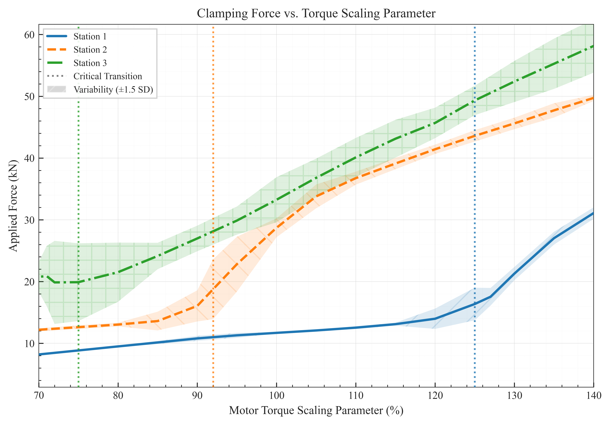

the problem
A production-critical clamping system exhibited severe performance inconsistencies across three identical stations. While Station 1 was stable, Stations 2 and 3 showed extreme force variations (up to 11.4 kN), threatening quality assurance and causing significant production delays.
methodology
-
1. Data Acquisition
Executed an iterative, data-driven analysis—a first for the workshop environment—to capture torque and speed profiles during operation.
-
2. Comparative Analysis
Systematically compared mechanical resistance and force application across all three stations, isolating key differences in their physical characteristics.
-
3. Control System Modeling
Identified that the core issue was not simple programming but a fundamental control system problem: insufficient gain margin.
-
4. Solution Validation
Developed and tested a new control scheme and operational parameters, validating the solution with a custom-developed Consistency Index (CI) metric.
key findings
-
Root Cause:
An historical "overpower" motor upgrade, standardized for a new machine design, created a system with excessive gain and insufficient damping. This eliminated the detection margin between movement-start torque and clamping torque (\( T_{start} \approx T_{clamp} \)).
-
Contributing Factors:
Station 1's higher inherent mechanical resistance provided a "fortuitous" natural damping effect that kept it stable, while the more optimized, lower-resistance Stations 2 and 3 were highly unstable.
-
System Behavior:
Discovered a non-intuitive "bi-modal stability" pattern. The system was only stable at very low forces (1.1-1.3 tonnes) or high forces (3-4 tonnes), with a highly unstable transition zone in between.

pragmatic solution engineering
The solution was engineered to be effective within existing hardware and software limitations (e.g., paywalled VFD features), focusing on parameter tuning rather than a costly redesign.
- Control System Redesign: Implemented a three-button system to separate positioning from the dedicated clamping operation.
- Station-Specific Parameter Tuning: Instead of a complex gain schedule, I performed a targeted, data-driven tuning of three key VFD parameters for each station individually, compensating for their unique mechanical resistances.
- PLC & Inverter Adjustments: Implemented a 1s PLC delay to ignore the initial torque spike and reconfigured the inverter to "ramp to stop" for smoother, controlled deceleration.
long-term validation & impact
The enduring value of this analysis was validated months after deployment when the original issue reappeared. Because I had anticipated the system's long-term sensitivity, I diagnosed the problem remotely and guided a permanent fix within minutes via a minor (1%) parameter adjustment. This event served as definitive, real-world proof of the original root cause analysis.
deliverables
| Engineering Analysis Report | An 11-page, IEEE-formatted technical report detailing the full root cause analysis, methodology, data visualization, and validated results. |
| QA Validation Framework | A strategic proposal and lean SOP (Standard Operating Procedure) designed to formalize knowledge capture and provide objective QA evidence. |
| VFD Parameter Set | A finalized master list of station-specific inverter parameters, detailing the precise values for torque detection, deceleration, and force scaling required to achieve stable operation. |
*Note: These documents contain proprietary information and are available to be discussed in detail during an interview.